Conseiller Régional Jeune
Instance participative
2024 - 2027
Région Nouvelle-Aquitaine | Bordeaux / Limoges
Conseil Régional Jeune
Le CRJ est une instance participative permettant aux jeunes de 16 à 25 ans de proposer, débattre et influencer les politiques publiques régionales en Nouvelle-Aquitaine.
Mandat prestigieux
Nommé comme l'un des représentants étudiants de la région pour défendre les intérêts de la jeunesse
📋 Nomination
Ma nomination au Conseil Régional Jeune s'est déroulée selon les modalités suivantes :
-
✓
Processus de candidature
Ouverture d'appels à candidatures auprès des établissements d'enseignement supérieur
-
✓
Sélection institutionnelle
Nomination par la Région Nouvelle-Aquitaine après évaluation du dossier
-
✓
Représentation régionale
Délégué comme représentant des étudiants informaticiens et jeunes limousins
-
✓
Engagement de trois ans
Mandat complet 2024-2027 avec participation régulière aux réunions

Conseil Régional Jeune
Région Nouvelle-Aquitaine
Missions principales
- Représentation : Voix de la jeunesse auprès de la région
- Propositions : Initiatives pour améliorer la vie des jeunes
- Consultation : Participé aux réunions plénières régionales
- Mobilisation : Engagement auprès des jeunes limousins
- Politique publique : Contribution aux décisions régionales
Thématiques prioritaires
📚 Éducation
Accès à la formation et employabilité des jeunes
💼 Emploi
Insertion professionnelle et alternance
🌍 Environnement
Transition écologique et engagement citoyen
❤️ Bien-être
Santé mentale et qualité de vie
Apprentissages civiques
- ✓ Compréhension des institutions régionales et gouvernance
- ✓ Capacité à construire et argumenter des propositions politiques
- ✓ Dialogue démocratique et consensus avec des pairs divers
- ✓ Influence réelle sur les politiques publiques régionales
- ✓ Responsabilité civique et engagement citoyen
Engagement trois ans
Mandat complet de trois ans (2024-2027) contribuant à la voix de la jeunesse limousine et nouvelle-aquitaine au niveau régional, travaillant pour des politiques plus inclusives et progressistes.
Région Nouvelle-Aquitaine